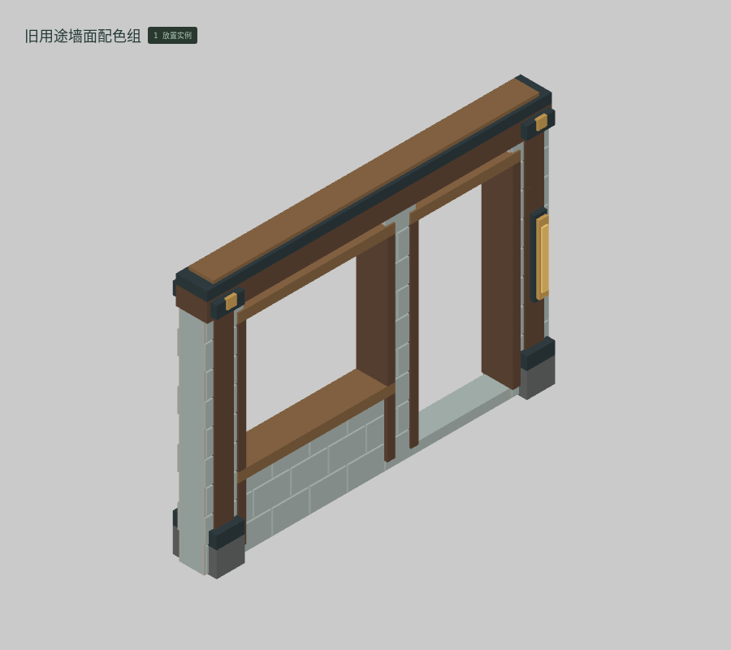
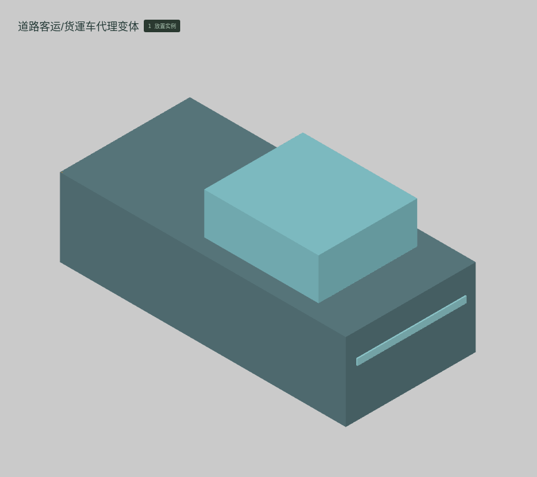
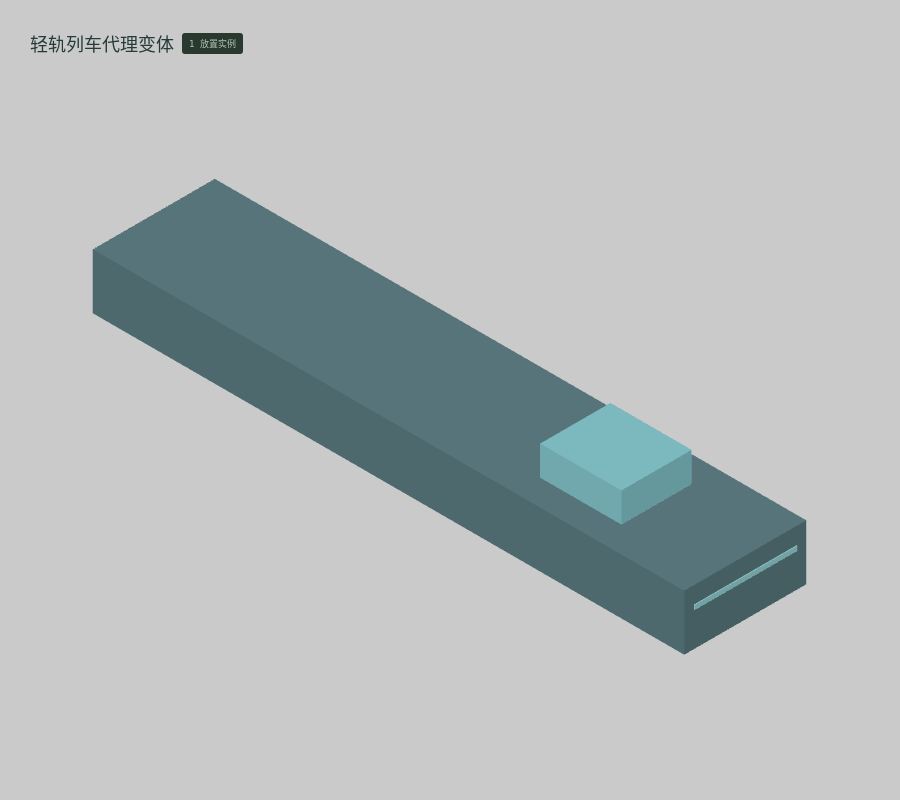
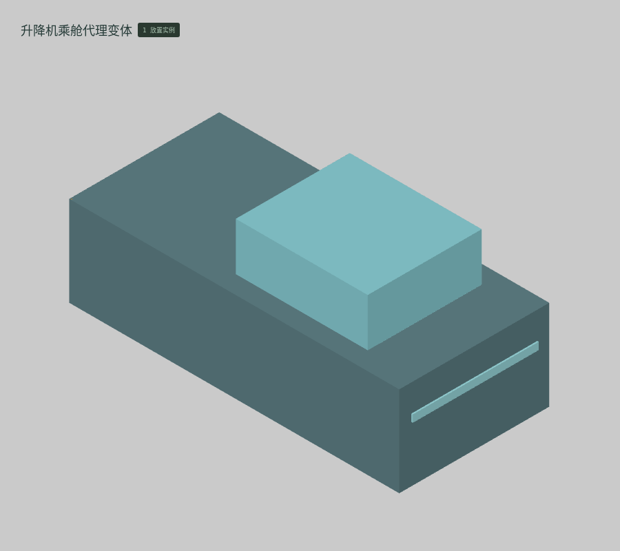
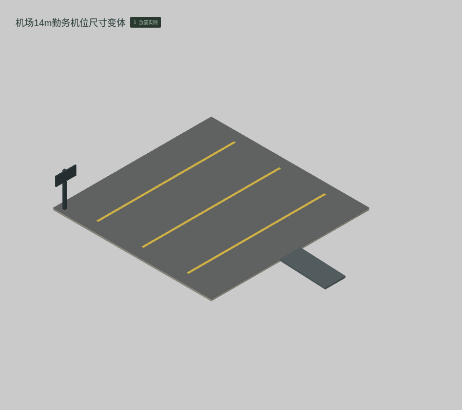
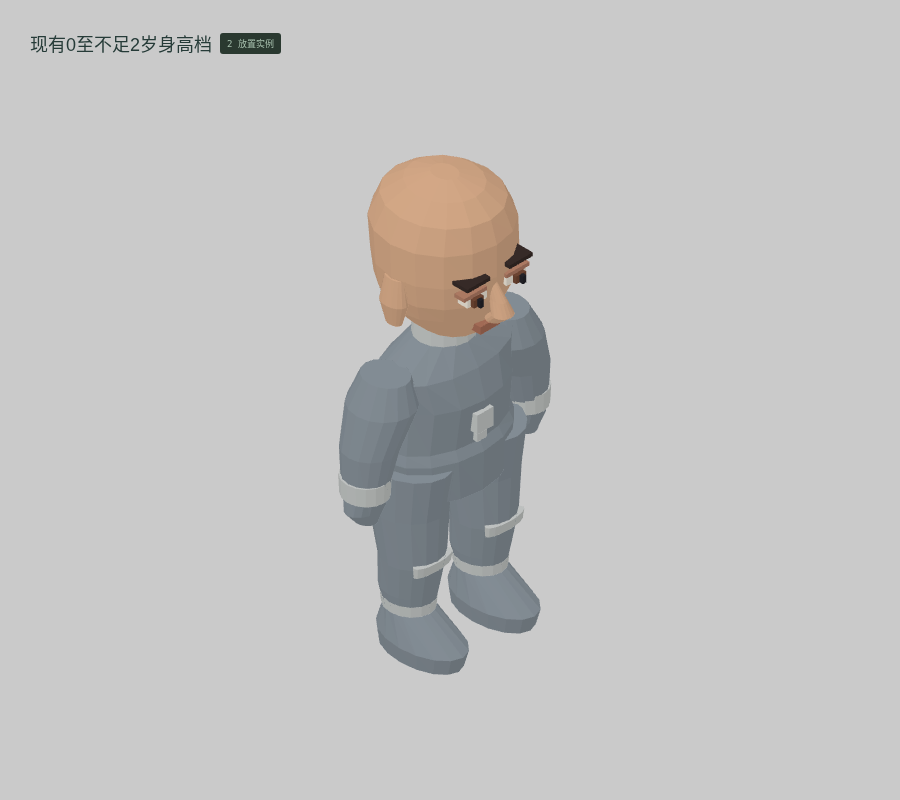
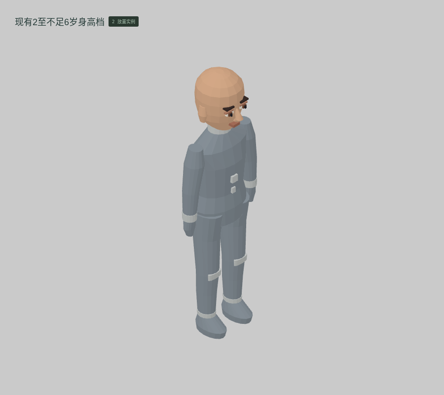

<!doctype html><meta charset="utf-8"><style>*{box-sizing:border-box}body{margin:0;background:#dfe1dd;color:#273d34;font:18px system-ui,'PingFang SC'}header{padding:26px 36px}h1{font-size:30px;margin:0 0 10px}main{display:grid;grid-template-columns:repeat(4,1fr)}figure{margin:0;border:1px solid #b7c0b6;background:#d4d8d1}img{display:block;width:100%}figcaption{padding:13px 22px 18px;font-size:19px}small{display:block;font-size:13px;margin-top:5px}footer{padding:24px 36px}</style><header><h1>云山 · M061 · 参数变体 · 12 件三维候选</h1>真实编辑器截图 · 基础块件与连续网格 · 不使用 AO / 辉光</header><main><figure><figcaption><b>BUILT-084 旧住宅单/双脊变体</b><small>母版参数变体 · 39 实例 · 10 体素格 · 实际边界 13.60 × 5.32 × 7.20 m</small></figcaption></figure><figure><figcaption><b>BUILT-085 旧用途墙面配色组</b><small>母版参数变体 · 1 实例 · 386,556 体素格 · 实际边界 4.40 × 3.20 × 0.60 m</small></figcaption></figure><figure><figcaption><b>BUILT-170 道路客运/货運车代理变体</b><small>母版参数变体 · 1 实例 · 1 体素格 · 实际边界 2.50 × 2.30 × 5.53 m</small></figcaption></figure><figure><figcaption><b>BUILT-171 磁悬浮列车代理变体</b><small>母版参数变体 · 1 实例 · 1 体素格 · 实际边界 3.30 × 2.30 × 16.02 m</small></figcaption></figure><figure><figcaption><b>BUILT-172 轻轨列车代理变体</b><small>母版参数变体 · 1 实例 · 1 体素格 · 实际边界 3.30 × 2.30 × 16.02 m</small></figcaption></figure><figure><figcaption><b>BUILT-173 缆车轿厢代理变体</b><small>母版参数变体 · 1 实例 · 1 体素格 · 实际边界 2.50 × 2.30 × 3.52 m</small></figcaption></figure><figure><figcaption><b>BUILT-174 升降机乘舱代理变体</b><small>母版参数变体 · 1 实例 · 1 体素格 · 实际边界 2.50 × 2.30 × 5.53 m</small></figcaption></figure><figure><figcaption><b>BUILT-175 渡船本体代理变体</b><small>母版参数变体 · 1 实例 · 1 体素格 · 实际边界 4.50 × 2.30 × 11.03 m</small></figcaption></figure><figure><figcaption><b>BUILT-176 公共班机本体代理变体</b><small>母版参数变体 · 1 实例 · 1 体素格 · 实际边界 14.00 × 2.60 × 17.02 m</small></figcaption></figure><figure><figcaption><b>BUILT-182 机场14m勤务机位尺寸变体</b><small>母版参数变体 · 1 实例 · 1 体素格 · 实际边界 14.50 × 3.35 × 18.00 m</small></figcaption></figure><figure><figcaption><b>CHAR-017 现有0至不足2岁身高档</b><small>母版参数变体 · 2 实例 · 391 体素格 · 实际边界 0.30 × 0.60 × 0.19 m</small></figcaption></figure><figure><figcaption><b>CHAR-018 现有2至不足6岁身高档</b><small>母版参数变体 · 2 实例 · 360 体素格 · 实际边界 0.33 × 1.00 × 0.19 m</small></figcaption></figure></main><footer>每格独立适配画幅，各模板不共用同一比例尺。本图包含原三盒载具代理，完整车辆另见 M048。几何候选，尚未通过人工美术验收。原生体素与连续网格分别保存和导出。</footer>